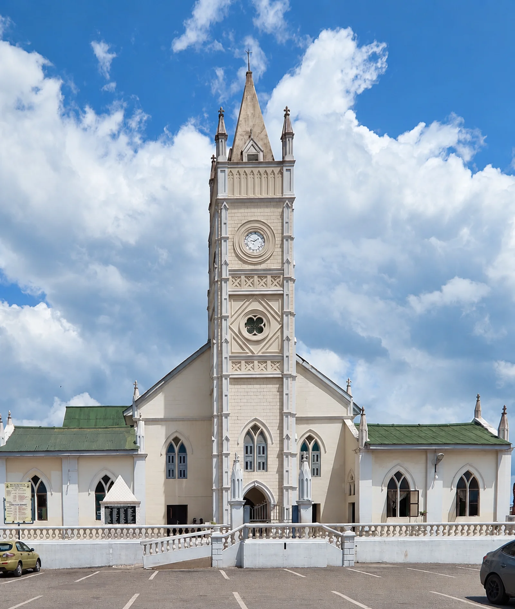

Heritage / Cape Coast
Wesley Methodist Church, popularly known as Chapel Square
A historic urban landmark to consider as part of a Cape Coast heritage route.
Plan my visit →
Front view of Wesley Methodist Church, popularly known as Chapel Square.
Download 8K upscaled photo ↗Your Cape Coast, your way
Make room for
what moves you.
Choose the places you want to see. Add your preferred date and pickup point, then review your proposed visit.
A plan, before a promise.
This preview saves your details in this browser session. It does not send a request or reserve a visit.